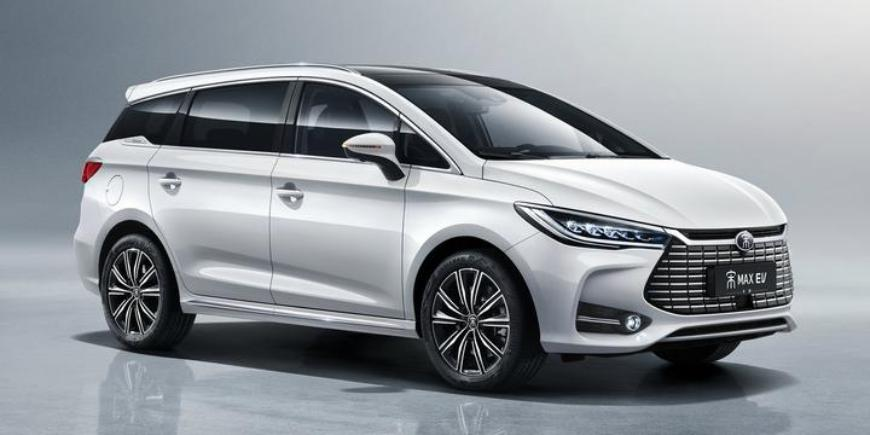
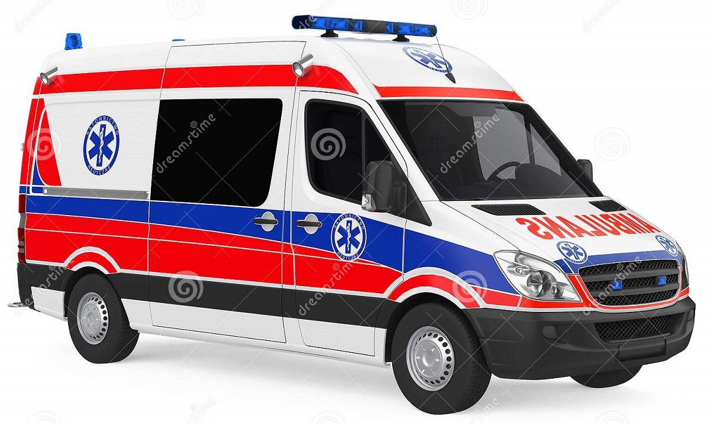
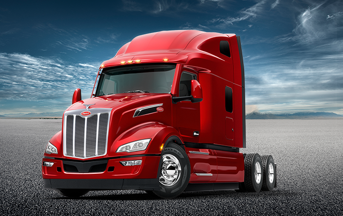

QIRAT COMPANY

V-100
V-100 avtomobili 163 at gücünə malikdir. Saatda maksimumm 150 km/saat sürətlə hərəkət edən V-100 avtomili 1,68 metr hündürlüyə, 1,81 metr genişliyə, 4,68 uzunluğa malikdir. 6 pilləli mexaniki sürət qutusuna malik 1,5 L turbo mühərrikli bu avtomobil həm də böyük ailələr üçün əlverişlidir. 2+2+2 nəfər tuta bilən avtomobil genişliyi rahatlığı ilə də göz oxşayır. Avtomobil təkcə Azərbaycanda deyil Rusiya, İran, Türkiyə, Ukrayna kimi ölkələrdə də böyük marağa səbəb olub.
Ətraflı məlumat üçün bura vurun

TT-1
Daxili məkanın mükəmməl istifadəsini kompakt xarici ölçülərlə birləşdirərək, TT-1 təcili yardım maşını yüngül, çox manevrli və C tipli təcili yardım maşını üçün EN 1789 tələblərinə mükəmməl cavab verir. Xəstə bölməsinə böyük bir sürüşmə qapıdan rahat şəkildə girilir; Bu qapı xilasetmə çantalarına və ya sırt çantalarına birbaşa çıxışı təmin edir. Uzunluğu 3,49 m Eni 1,96 m Hündürlüyü isə 1,97 metrdir. 190 at gücünə malik olan 7 pilləli avtomatik transmissiya sürət qutusuna sahib olan TT-1 maksimum ümumi çəkisi 3880 kqdır.
Ətraflı məlumat üçün bura vurun

YA-95
PACCAR MX-13 motorlu güclü və öz sinifində liderlərdən olan YA-95 həm sürücü rahatlığı həm də, keyfiyyət sarıdan özünü ən yaxşı səviyyədə sübut edə bilib. Çox yük götürmə qabiliyyəti, dözümlülüyü və sürəti ilə sürücülərin ən çox sevdiyi bu maşın ölkədə özünə məxsus yeri var. Dünyanın 50 yaxın ölkəsində işlənən bu maşınlar öz izlərini qoymağı bacarırlar.
Ətraflı məlumat üçün bura vurun
Mercedes-Qırat S-klass
Mercedes və Qırat şirkətlərinin birgə layihəsi olan S-klass keyfiyyəti, rahatlığı və elektriklə işləməyi onu rəqiblərindən daha üstün edir.
Ətraflı məlumat üçün bura vurun
Ölkəxarici avtoservislər
Ən yaxşı ustalarımız.